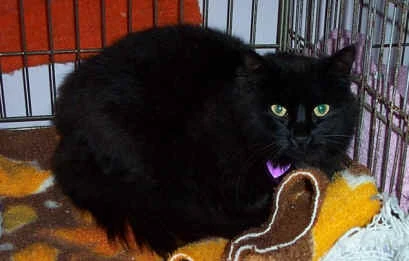

Gato Transformador

Ficha Técnica:
Nome: Gato Transformador
Nomes alternativos: O Moldador, Gato da Mutação, Distorcedor de Formas, O Alterador
Raça: Gato
Tipo da raça: Alterador de Realidade
Nivel de ameaça: Médio
Características físicas:
- Gato doméstico preto de pelos longos
- Olhos amarelos com brilho sobrenatural
- Aura etérea visível em fotografias
- Tamanho ligeiramente maior que gatos comuns
Capacidades:
- Transformação física de qualquer ser vivo em um raio de 30 metros
- Seres amigáveis são transformados em gatos
- Seres hostis são transformados em presas (ratos, pássaros)
- Sugestão telepática em humanos dentro do raio de efeito
- Transformações são permanentes sem intervenção externa
- Pode criar exércitos de gatos leais a partir de humanos
Fraquezas:
- Precisa de contato visual para ativar suas capacidades
- Não consegue transformar objetos inanimados
- Fica vulnerável após múltiplas transformações em sequência
- Equipamentos que bloqueiam linha de visão impedem seu poder
Como contê-lo:
PROTOCOLO DE EMERGÊNCIA: Nunca olhe diretamente para ele. Use apenas câmeras e espelhos para observação. Se você sentir vontade inexplicável de se aproximar, você já está sob influência telepática. Solicite extração imediata. Dezenas de funcionários já foram transformados permanentemente.
Relato do Agente Marcus:
Agente Marcus liderou a equipe de primeira contenção. Ele é um dos poucos que retornou em forma humana.
"Entramos com quinze homens. Saímos com três humanos e doze gatos. Meus amigos, meus colegas de anos, agora são gatos. Eles ainda me reconhecem, eu acho. Às vezes olham para mim de um jeito que parece que estão tentando falar algo. O mais perturbador é que eles parecem felizes. Ronronam, brincam, vivem vidas de gato. Talvez seja melhor assim pra eles. Mas quando eu olho nos olhos do Ricardo, agora um gato malhado, eu sei que ele ainda está lá dentro. E isso me assombra toda noite."
Variações:
Há relatos de gatos menores com poderes de transformação limitados, possivelmente crias.
História:
A história do Gato Transformador ainda está sendo documentada.